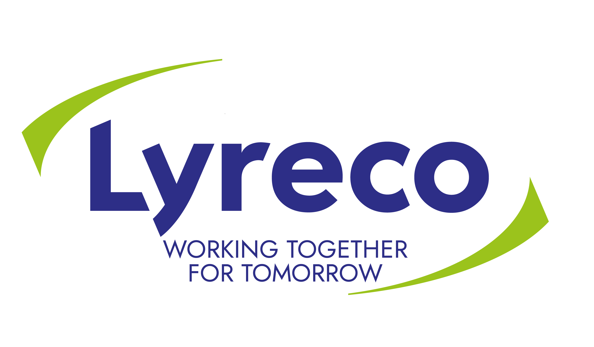

+++
title = "Lyreco - Plánovač/-ka materiálu"
slug = "86"
+++

<div class="container mb-5">
    <div class="row justify-content-around">
        <div class="col-6 col-md-2 mt-3">
        </div>
        <div class="col-md-8">
            <h1>Lyreco CE, SE</h1>
          <h2>Plánovač/-ka materiálu</h2>

            <p>
                <strong>Miesto: </strong>Pezinok (50% homeoffice)<br/>
                <strong>Forma: </strong>TPP (polovičný, skrátený úväzok)<br/>
                <strong>Flexi faktor: </strong>polovičný úväzok (20 hodín týždenne), 50% homeoffice<br/>
                <strong>Plat: </strong>od 850 € (finálna výška mzdy závisí od seniority kandidáta/-ky)<br/>
                <strong>Očakávaný nástup: </strong>ASAP<br/>
                <strong>Dátum pridania ponuky: </strong>18.8.2023<br/>
            </p>
            <h2>O firme </h2>
            <p>Sme medzinárodná obchodná spoločnosť s viac ako 90 ročnou tradíciou na európskom trhu, 
              ktorej charakteristickými črtami sú predvídavosť, zavádzanie noviniek, rýchla reakcia na zmeny, 
              dynamickosť a neustály rozvoj. V centre všetkého čo robíme a o čo sa snažíme sú ľudia, ich pohodlie, 
              spokojnosť, dokonalé usporiadanie a vybavenie pracovného prostredia. Dôležití sú pre nás nielen 
              naši zákazníci, ale dôraz 
              kladieme tiež na spokojnosť a neustály osobný a profesijný rozvoj našich zamestnancov.</p>
    
          <h2>Náplň práce</h2>
         
         <ul>
           <li>Zodpovednosť za výšku skladovej zásoby pridelených produktov </li>
           <li>Zadávanie nákupných objednávok, riešenie omeškaných dodávok a prípadných nezrovnalostí </li>
           <li>Forecasting, plánovanie akcií marketingovej podpory</li>
           <li>Udržiavanie master dát produktov/dodávateľov </li>
           <li>Komunikácia s dodávateľmi a internými oddeleniami </li>
           <li>Iné projekty podľa pokynov Replenishment Managera</li>
            
         </ul>
                   
           <h2>Požiadavky</h2>
        
      <ul>
        <li>Skúsenosť s prácou v oblasti plánovania materiálu minimálne 2 roky </li>
        <li>Komunikatívna znalosť anglického jazyka je podmienkou </li>
        <li>Znalosť nemeckého alebo maďarského jazyka je výhodou </li>
        <li>Znalosť práce v systéme SAP výhodou * Práca s PC – MS Excel - pokročilý </li>
        <li>Analytické myslenie a štruktúrovaný prístup k práci </li>
        <li>Orientácia na detail / presnosť </li>
        <li>Tímový hráč</li>
          </ul>
       
             <h2>Doplňujúce info</h2>     
        <p>Čo ponúkame? </p>
          <ul>
            <li>dovolenka navyše </li>
            <li>po zaučení možnosť pracovať 50% na homeoffice </li>
            <li>ročná odmena podľa výsledkov spoločnosti </li>
            <li>MultiSport karta </li>
            <li>Talent akadémia </li>
            <li>ocenenie Very Lyreco People - nezabudnuteľné výlety pre najlepších z najlepších </li>
            <li>finančná odmena 700 EUR pri odporučení zamestnanca </li>
            <li>príspevky pri rôznych životných a pracovných jubileách </li>
            <li>Nespresso káva a pitný režim na pracovisku </li>
            <li>Bezplatná linka psychologickej, právnej a finančnej pomoci</li>
            
          </ul>


            <h2>Ďalší postup</h2>
<p>CV s motivačným listom prosíme zaslať na adresu:<a href="mailto:miriam.rubaninska@lyreco.com">miriam.rubaninska@lyreco.com</a>. </p>

        </div>
        <div class="col-md-2"></div>
    </div>
    <div class="row">
        <div class="col offset-md-2 mt-5">{{< back >}}</div>
    </div>
</div>
